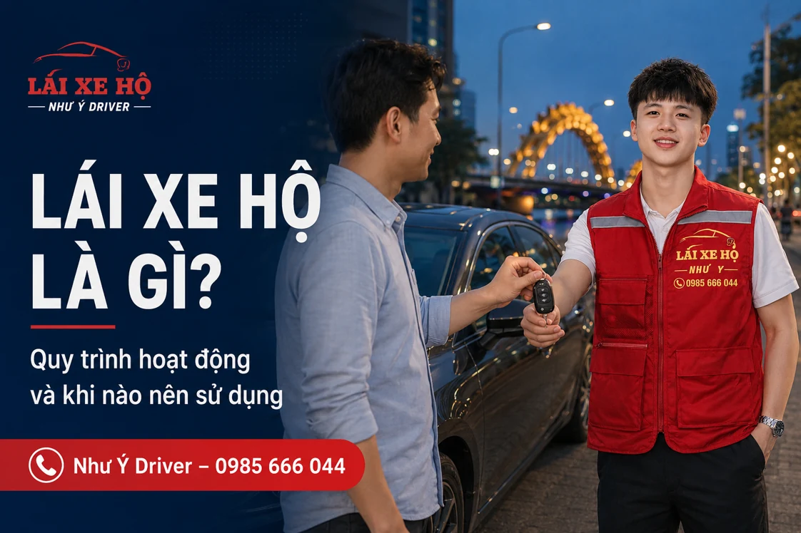

NHƯ Ý DRIVER · CẨM NANG DI CHUYỂN
Lái xe hộ là gì? Cách hoạt động và khi nào nên sử dụng
Lái xe hộ là thuê tài xế điều khiển chính phương tiện của bạn theo chuyến đã thỏa thuận. Dịch vụ phù hợp khi cần đưa xe về sau tiệc hoặc muốn có người lái thay; bạn nên biết cách đặt, bàn giao và chốt chi phí trước khi sử dụng.

Lái xe hộ là gì?
Lái xe hộ là dịch vụ thuê tài xế điều khiển phương tiện của khách theo lộ trình đã thỏa thuận. Bạn bàn giao xe tại điểm hẹn; tài xế lái chiếc xe đó đưa bạn đến điểm trả. Khi hoàn tất, bạn nhận lại xe và chìa khóa.
Vì dùng xe của khách, dịch vụ này phù hợp khi bạn muốn cả người và xe cùng về nhà. Bạn cần nói rõ ô tô hay xe máy khi đặt, bởi cách bố trí chuyến và bảng giá của hai loại xe khác nhau.
Khác gì với taxi và thuê xe có tài xế?
Với taxi hoặc thuê xe có tài xế, bên cung cấp dịch vụ bố trí cả phương tiện lẫn người lái. Với lái xe hộ, bạn đã có xe và chỉ cần người lái thay. Đây là điểm nên xác định trước khi so sánh giá.
Nếu không mang xe riêng, bạn có thể cân nhắc phương tiện đưa đón. Nếu xe đang ở bãi của nhà hàng và cần dùng vào sáng hôm sau, lái hộ giúp bạn giải quyết luôn việc đưa xe về. Xem thêm so sánh lái xe hộ và taxi để chọn theo tình huống của mình.
Những lúc nào nên tìm người lái thay?
- Sau buổi tiệc: bạn không tự điều khiển xe khi đã uống rượu bia.
- Khi mệt hoặc buồn ngủ: bạn muốn sắp xếp lại chuyến đi và nhờ người lái thay.
- Lịch trình nhiều điểm: bạn cần người lái trong lúc đi họp, làm việc hoặc đưa đón người thân.
- Chuyến đường dài: bạn muốn nghỉ ngơi trên xe và chủ động hỏi lịch tài xế trước ngày đi.
Một chuyến lái xe hộ diễn ra như thế nào?
Ví dụ, bạn cần đưa ô tô từ nhà hàng về nhà sau buổi liên hoan. Khi liên hệ, hãy gửi địa chỉ nhà hàng, vị trí đỗ xe, điểm đến và giờ muốn về. Điều phối trao đổi giá, thời gian đón dự kiến và thông tin tài xế.
Tại điểm hẹn, bạn đối chiếu người nhận xe, kiểm tra tình trạng xe và giới thiệu thao tác riêng nếu có. Cuối chuyến, kiểm tra đồ dùng, nhận lại chìa khóa rồi thanh toán theo nội dung đã thống nhất. Danh sách chuẩn bị khi bàn giao xe sẽ giúp bạn không bỏ sót những việc nhỏ này.
Giá lái xe hộ tại Đà Nẵng được tính ra sao?
Chi phí phụ thuộc loại xe, quãng đường, thời điểm đi và yêu cầu chờ hoặc ghé thêm điểm. Bạn có thể xem bảng giá ô tô và xe máy để dự trù, sau đó gửi hành trình để chốt giá trước chuyến.
Để đặt Như Ý Driver, gọi 0985 666 044, nhắn Zalo hoặc dùng biểu mẫu trên trang chủ. Nên liên hệ khi đã có giờ về dự kiến để chủ động sắp xếp.
Ai chuẩn bị phương tiện, ai giữ liên lạc?
| Việc trong chuyến | Điều cần thống nhất |
|---|---|
| Chiếc xe | Khách đã có phương tiện ở điểm nhận và thông báo tình trạng xe. |
| Người lái | Điều phối xác nhận thông tin tài xế và thời gian đón dự kiến. |
| Lộ trình | Khách gửi điểm đi/đến, giờ đi, chặng ghé và yêu cầu chờ. |
| Bàn giao | Đối chiếu tài xế, giao chìa khóa và nhận lại xe cuối chuyến. |
Nếu điều bạn cần là một chiếc xe đưa đón, hãy tìm phương án gồm cả phương tiện. Nếu đã có xe ở bãi, lái hộ ô tô hoặc lái hộ xe máy là hai nội dung nên xem tiếp.
Câu hỏi thường gặp
Lái xe hộ có mang ô tô đến đón không?
Dịch vụ lái hộ sử dụng xe của bạn. Nếu cần cả xe đưa đón, hãy nói rõ nhu cầu khi liên hệ để chọn phương án phù hợp.
Có thể đặt tài xế lái xe máy không?
Bạn có thể gửi yêu cầu lái hộ xe máy, kèm loại xe, số người và địa chỉ đón để trao đổi cách bố trí chuyến.
Thông tin liên quan
HÃY CHỦ ĐỘNG CHO CHUYẾN ĐI
Cần người lái xe thay bạn?
Gửi điểm đón, điểm đến, loại xe và giờ đi. Như Ý Driver sẽ kiểm tra lịch, thống nhất chi phí và thời gian đón trước khi xác nhận chuyến.